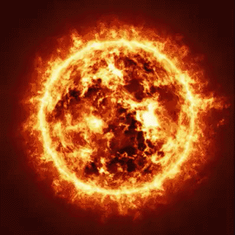
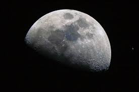
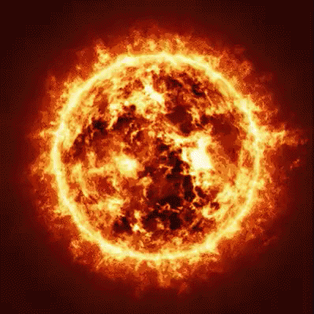
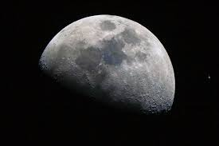
 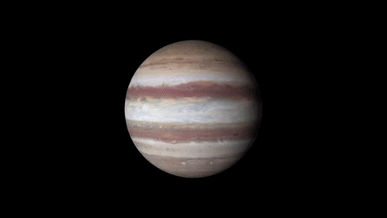
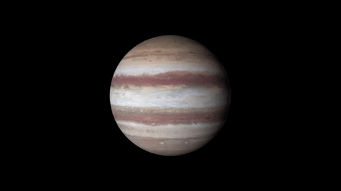
 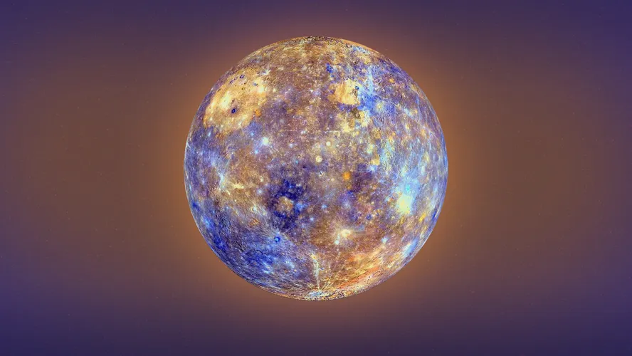
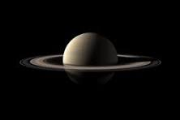
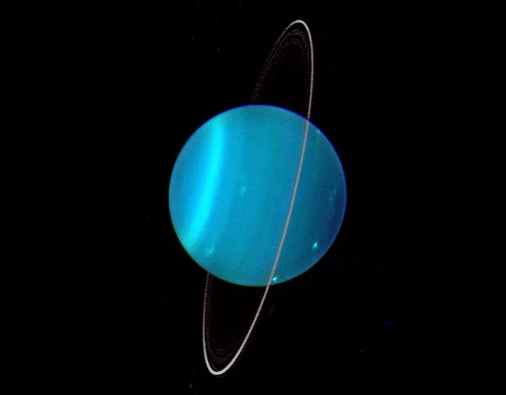
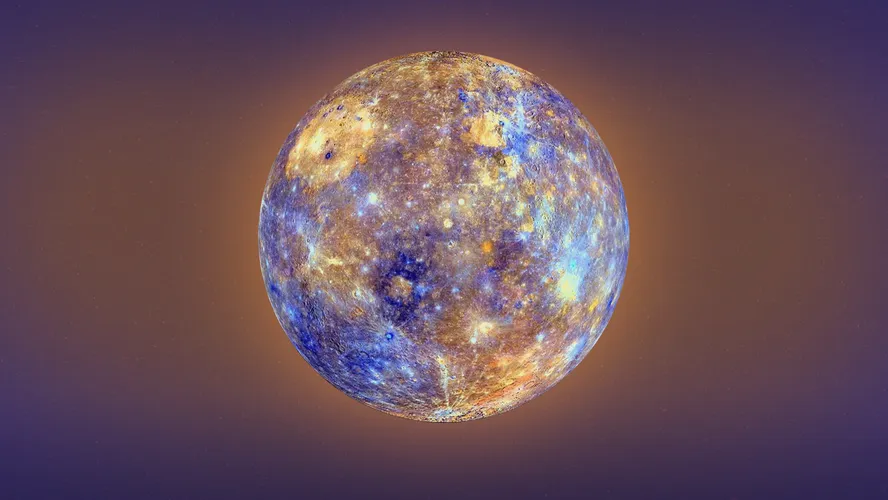
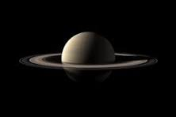
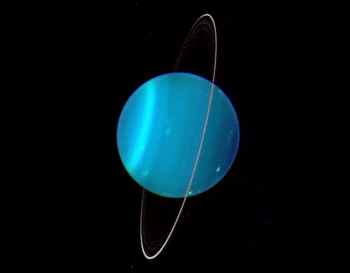

central universe
A formação do universo: o Big Bang Segundo a teoria criada pelo astrônomo George Lemaître (1894-1966), o universo tem uma origem comum, a partir da qual tudo se originou. Esta teoria foi confirmada pelo astrônomo norte-americano Edwin Hubble, que verificou que as galáxias estão em constante expansão e afastamento. A teoria do Big Bang diz que toda matéria e energia se concentravam em um ponto super denso e quente, conhecido como singularidade. A partir deste ponto, o universo se expandiu num processo conhecido como inflação, que durou uma fração infinitesimal de tempo. Uma série de transformações continuou a acontecer por bilhões de anos, até a estrutura com que o conhecemos hoje. O universo foi se expandindo cada vez mais, de forma que foi se resfriando, dando origem aos diversos astros.
sol
O Sol é uma estrela anã amarela que os demais corpos celestes do Sistema Solar orbitam. Ele é formado por gases e não dispõe de nenhuma superfície sólida. O Sol é uma estrela localizada na Via Láctea. Trata-se da estrela mais próxima do planeta Terra e a maior de todo o Sistema Solar.
Lua
A Lua é o único satélite natural da Terra. Está a 384.400 km do planeta, e a cada ano se afasta 3,78 centímetros. Apresenta uma exosfera fina e frágil, e sua estrutura é composta por crosta, manto e núcleo. Sua superfície está repleta de crateras de impacto, fragmentos de rocha e poeira.
Marte
Marte é o quarto planeta mais próximo do Sol e o segundo menor planeta do sistema solar, depois de Mercúrio, sendo consideravelmente menor que o planeta Terra. Apresenta uma coloração avermelhada, pela presença de óxido de ferro na sua superfície.
jupiter
Júpiter é considerado o maior planeta do Sistema Solar, sendo rodeado de vários satélites naturais. É o quinto na ordem dos planetas tendo-se o Sol como a referência. Ouça o texto abaixo! Júpiter é o maior planeta do Sistema Solar, estando situado entre Marte e Saturno.
venus
O planeta Vênus é o segundo do nosso sistema solar a partir do Sol e o mais próximo da Terra, a apenas 61 milhões de quilômetros de distância. Uma de suas principais características é o fato de, como um planeta rochoso, sua superfície ser composta por vales e altas montanhas, cheias de vulcões.
Mercurio
Mercúrio é o planeta mais próximo do Sol. Mercúrio é um planeta que não possui uma inclinação semelhante à da Terra. Sem essa inclinação e com uma translação curta, não há existência de estações do ano. Essa baixa inclinação explica também o gelo encontrado nas crateras desse planeta.
Saturno
Saturno é o segundo maior planeta do Sistema Solar, com 9 vezes o tamanho da Terra. Está relativamente distante do Sol, sendo o sexto planeta a partir dessa estrela, demorando 29,4 anos terrestres, ou 10.756 dias, para completar uma volta em torno dela.
Urano
Formado principalmente por gases e fluidos, Urano não possui uma superfície sólida como a Terra. Sua estrutura é composta, ainda, por sistemas de anéis que orbitam ao seu redor, os quais são menos brilhantes do que os de outros planetas, como Saturno.
Netuno
Netuno é o oitavo planeta do Sistema Solar a partir do Sol e o mais distante deste. Dispõe de coloração azulada e é formado essencialmente por gases, como o metano. Netuno é o planeta pertencente ao Sistema Solar mais distante do Sol.